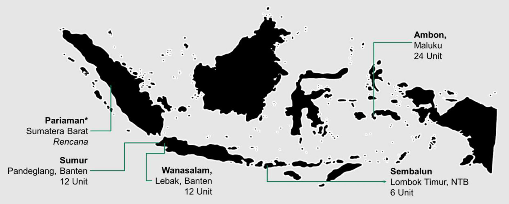

Sejak tahun 2018 tercatat telah terjadi beberapa peristiwa gempabumi di berbagai wilayah Indonesia mulai dari yang berskala kecil, sedang, hingga gempa dengan magnitudo besar yang mampu meluluhlantahkan daerah yang terdampak.
Meningkatnya frekuensi bencana kebumian terutama gempabumi serta tingginya jumlah korban jiwa dan kerugian yang ditimbulkan mengingatkan kita akan pentingnya pengembangan sistem peringatan dini dan implementasinya di masyarakat. Atas dasar itulah sebuah sistem sinyal alarm berbasis sensor getaran dan radio communication sistem dikembangkan oleh tim peneliti dan pengajar di Program Studi Geofisika, Universitas Indonesia Sebuah perangkat pendeteksi sekaligus peringatan dini gempa bumi yang diberi nama EWAS ini Dikembangkan untuk membantu warga bersiap-siaga dalam melakukan prosedur evakuasi ketika terjadi gempabumi.
Earthquake Warning Alert sistem (EWAS) adalah sebuah perangkat yang berfungsi sebagai sistem tanda peringatan gempabumi. Sistem peringatan dini ini diharapkan dapat meningkatkan rasa aman sekaligus kewaspadaan masyarakat di daerah-daerah rawan bencana gempabumi.
EWAS memberi tanda peringatan gempabumi berupa bunyi sirine yang keras tepat saat gejala kegempaan mulai terjadi. EWAS efektif mendeteksi guncangan gempa dengan amplitudo yang lebih kecil, (gelombang primer) yang terjadi beberapa saat sebelum gempa utama.
Dikembangkan oleh Geosinyal Solusi Nusantara bersama dengan para Peneliti Bidang Kebumian di Universitas Indonesia.
Spefisikasi Alat
Dimensi : 18 x 12 x 22 cm
Berat : 1,5 kg
Tegangan Input: 220 V / 50 Hz
Daya stand-by: 3 Watt
Daya aktif: 20 Watt
Jangkauan sirine: ±200 m
Komunikasi : Radio
Antena gain: 6 dB
Jangkauan radio: ±400 m
Perbedaan mendasar antara EWAS dengan sistem informasi gempa bumi yang ada adalah peringatan dini yang diberikan berfokus pada masyarakat. Sinyal peringatan gempa akan langsung diterima oleh masyarakat tepat saat gempa terjadi. Tidak melalui pusat data untuk kemudian dibroadcast di berbagai media beberapa menit kemudian, yang tentunya akan membutuhkan waktu yang lama.
Pada setiap gempa, gelombang yang bersifat merusak datang hanya kurang dari 5 menit setelah tanda kegempaan dimulai. Namun sayangnya, proses pengolahan data gempa konvensional membutuhkan waktu lebih lama dari pada itu hingga beritanya disampaikan pada masyarakat.
EWAS memberi tanda peringatan tepat saat tanda kegempaan terdeteksi, kurang dari 5 detik, sehingga diharapkan warga mempunyai cukup waktu untuk melakukan evakuasi penyelamatan secara mandiri.
P-Wave Detection
Sensor getaran mendeteksi gelombang P
Warning Alert
Jika dikenali sebagai gempabumi, sistem alarm akan aktif
Evacuation Procedures
Warga mendengar peringatan dan cepat melakukan evakuasi
Stay Save from Collapsed Buildings
Warga telah berada di tempat yang aman
Sistem EWAS yang terpasang di suatu wilayah bekerja secara terpadu. Untuk membedakan getaran yang bersifat lokal dengan gempa bumi sebenarnya, sistem alarm hanya akan aktif jika getaran di atas ambang magnitudo tertentu terdeteksi oleh lebih dari satu unit alat.
Saat sinyal gempa terkonfirmasi pada seluruh alat yang terpasang, maka sirine gempa akan dibunyikan. EWAS memberikan tanda peringatan tepat saat gempa terdeteksi, sehingga diharapkan masyarakat memiliki cukup waktu untuk melakukan evakuasi penyelamatan diri dan keluarganya.
Setiap unit dipasang di berbagai tempat yang strategis, sehingga tanda peringatan dapat menjangkau suatu wilayah secara maksimal.
Jarak minimum antar sensor bergantung pada kondisi wilayah, kepadatan, topografi, dan spesifikasi antenna yang digunakan.
Secara umum, pemasangan EWAS relatif mudah, dan dapat dlakukan secara mandiri. Untuk pemeliharaan alat pun tidak sulit dan tidak membutuhkan biaya yang besar.
Berbeda dengan alat detektor gempa yang sudah ada (imported product), EWAS dilengkapi dengan sistem alarm sehingga informasi datangnya gempa langsung disampaikan pada masyarakat setempat.
Perambatan gelombang gempa berlangsung sangat cepat. Selang waktu antara gelombang primer dan sekunder sangat dekat. EWAS mampu memberikan peringatan secara langsung pada masyarakat tanpa harus melalui proses pengolahan data di pusat.
Daya yang digunakan oleh EWAS sangat kecil, hanya 5 Watt saat stand-by dan 20 watt saat sirine berbunyi. Untuk mengantisipasi padamnya listrik, EWAS menggunakan solar panel sebagai sumber daya, sehingga mampu tetap berfungsi ketika gempa terjadi.
Instalasi EWAS tergolong mudah, karena hanya perlu dipasangkan pada badan bangunan yang kokoh. Setiap unit alat dilengkapi dengan mounting bracket yang menjaga alat tetap aman dan stabil.
EWAS nantinya akan dilengkapi dengan sistem digitasi, pendataan, dan sistem komunikasi satelit untuk pengiriman data jarak jauh terkait keperluan monitoring aktivitas kegempaan.
(Per Desember 2019)
Sistem alarm EWAS berkerja aktif pada gempa-gempa bermagnitudo besar, dan tidak aktif pada kejadian gempa yang lebih kecil.